02 · Menú Archivo
El menú Archivo contiene los datos maestros del negocio: la información estable sobre la que se apoyan todos los documentos (empresas, almacenes, clientes, proveedores, artículos) y las tablas auxiliares que los clasifican. Es el primer menú que se configura al poner en marcha la aplicación.
Recuerda: todas estas pantallas comparten el funcionamiento descrito en 01 · Conceptos comunes (lista, ficha, navegador, búsqueda, grabar/cancelar). Aquí se describe solo lo propio de cada una.
Estructura del menú:
Archivo
├── Empresas
├── Almacenes
├── Clientes
├── Proveedores
├── Artículos
├── Tablas Auxiliares
│ ├── Tarifas
│ ├── Familias
│ ├── Paises
│ ├── Unidades de Medida
│ ├── Propiedades
│ ├── Tipos de Variaciones
│ ├── Colecciones de Atributos
│ └── Atributos básicos
├── Invocar login
└── SalirEmpresas
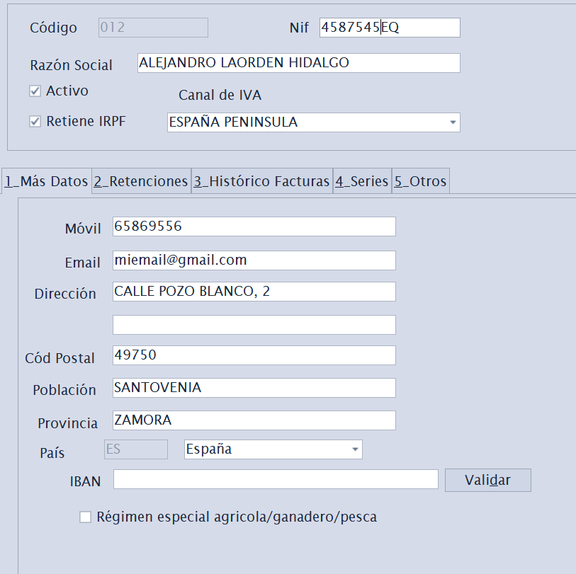
Atajo de menú: [Ctrl]+[E]
Mantiene las empresas emisoras que facturan desde Factuzam (puede haber más de una). Cada empresa concentra sus datos fiscales y la configuración de facturación. Todas ellas comparten artículos/familias/clientes...
Datos principales: Código, Orden, Activo, Razón Social, NIF, dirección completa (dirección, población, provincia, código postal), Móvil, Email.
Datos fiscales y de facturación (en sub-pestañas):
- Más datos — contacto y datos complementarios.
- Retenciones — código y % de retención aplicable; marca Aplica Retenciones y Es REAGP (Régimen Especial Agricultura, Ganadería y Pesca).
- Series — series de numeración de los documentos de la empresa (puedes añadir varias series de facturación).
- Bancos — cuentas bancarias propias de la empresa. Se usan para preseleccionar la cuenta de cobro en recibos de cliente y la cuenta de pago en efectos/remesas de proveedor.
- Certificado / Verifactu — Número de Serie y Tipo de Certificado para la firma y el envío de facturas al sistema Verifactu (AEAT) y para la emisión de eDoc firmado cuando corresponda.
- Texto en Factura — texto legal que se imprimirá en los documentos.
- Zona de IVA principal — régimen de IVA por defecto de la empresa.
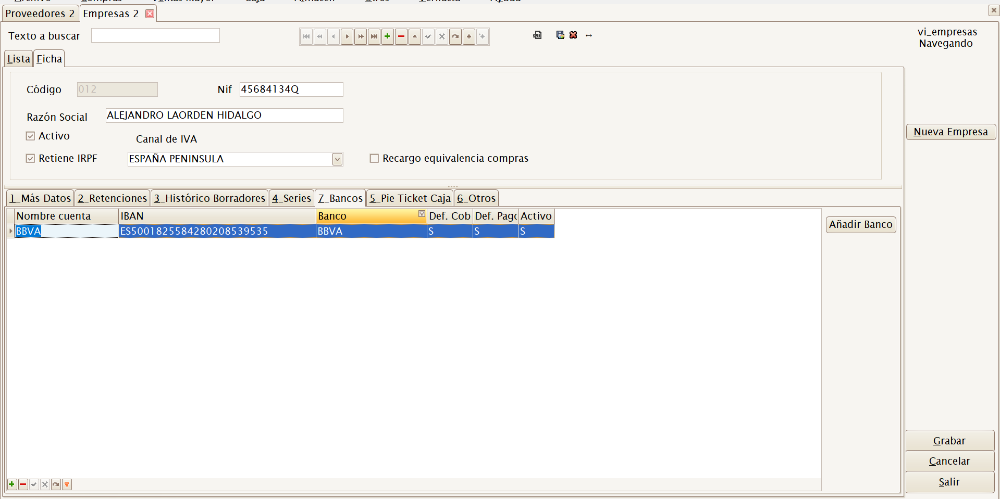
La configuración correcta de NIF, series y certificado es imprescindible para emitir facturas válidas y para la integración con Verifactu. Si tienes dudas fiscales, consúltalas con tu asesoría antes de facturar.
Almacenes
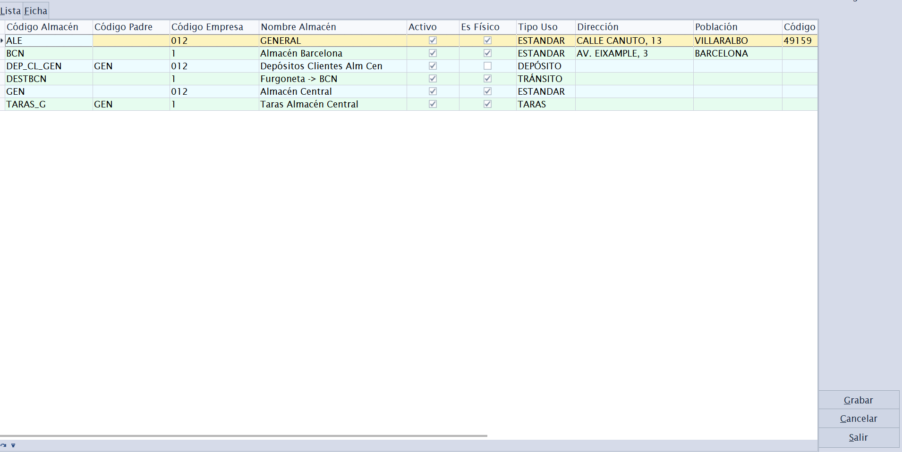
Atajo de menú: [Ctrl]+[L]
Mantiene los almacenes físicos o lógicos donde se ubica el stock. Cada movimiento de stock, inventario o documento de mercancía referencia un almacén.
La casilla En web indica si un almacén estándar, activo y físico puede aportar stock a la tienda online de su empresa. Para cada perfil PrestaShop se suman únicamente los almacenes En web que pertenecen a la empresa configurada; los de otra empresa, taras y depósitos quedan fuera. Consulta Integración con PrestaShop.
Sub-pestañas de la ficha:
- Dirección física — ubicación del almacén.
- Cajas de Venta — cajas/TPV asociadas a este almacén (relación almacén ↔ caja para el módulo Caja).
- Usos Almacén — para qué se usa el almacén (venta, depósito, etc.).
- Otros — datos complementarios.
Clientes
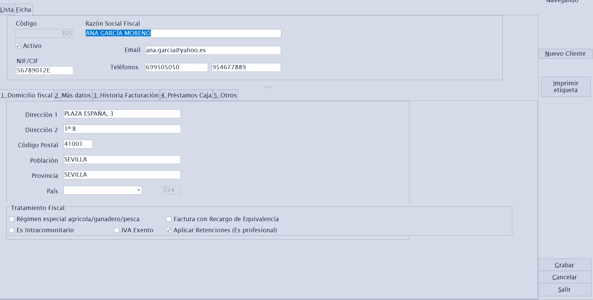
Atajo de menú: [Ctrl]+[K]
Mantiene la ficha de clientes a quienes se vende y factura.
Datos generales: Código, Activo, Razón Social, NIF/CIF, teléfonos (móvil y fijo), Email, dirección completa, País, Observaciones, Referencia, Contacto y teléfono de contacto, Nº de cuenta.
Datos fiscales que determinan cómo se calcula cada factura del cliente:
| Campo | Efecto |
|---|---|
| Forma de pago por defecto | Se propone automáticamente en sus documentos. |
| Banco cobro | Cuenta de la empresa que se propone al generar recibos de cobro para este cliente. |
| Aplicar RE | Aplica Recargo de Equivalencia. |
| Aplicar Retenciones | Aplica retención de IRPF. |
| Tiene IVA exento | El cliente no soporta IVA. |
| Es Intracomunitario | Operación intracomunitaria (IVA 0 con condiciones). |
| Es Agricultor | Régimen especial agrario. |
| Razón Social Fiscal | Nombre fiscal si difiere del comercial. |
| Texto Legal Factura | Texto específico para las facturas de este cliente. |
Estos indicadores afectan directamente al cálculo de impuestos en ventas. Configúralos con cuidado al dar de alta el cliente.
Parámetros eDoc: esta pestaña guarda los datos necesarios para emitir un fichero Facturae firmado desde Ventas Mayor:
| Campo | Para qué sirve |
|---|---|
| Oficina contable | Código DIR3 de la oficina contable del cliente público. |
| Órgano gestor | Código DIR3 del órgano gestor. |
| Unidad tramitadora | Código DIR3 de la unidad tramitadora. |
| Nombre persona física | Nombre cuando el receptor es persona física. |
| Apellidos persona física | Apellidos cuando el receptor es persona física. |
Estos datos se copian como foto a cada borrador de venta mayor al elegir el cliente. Si una factura concreta necesita otro valor, se corrige en la pestaña Parámetros eDoc del propio borrador.
Proveedores
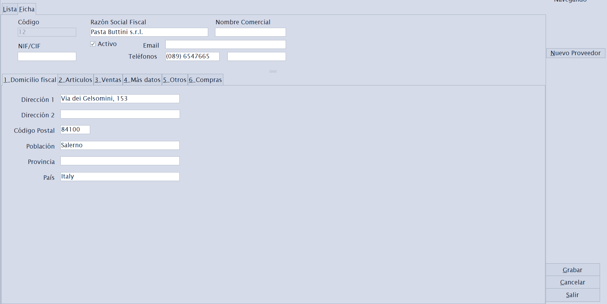
Atajo de menú: [Ctrl]+[P]
Mantiene la ficha de proveedores a quienes se compra mercancía. Estructura análoga a Clientes, orientada a compras.
Sub-pestañas de la ficha:
- Domicilio fiscal — datos fiscales y de dirección.
- Artículos — artículos que suministra el proveedor (con sus referencias y precios de compra).
- Ventas — histórico/relación comercial.
- Más datos y Otros — información complementaria.
- Compras — parámetros por defecto para las sesiones de compra de este proveedor (ver abajo).
- Pagos — forma de pago habitual y banco de la empresa desde el que se pagarán sus efectos o remesas.
Pestaña Compras (parámetros de compra del proveedor)
Concentra valores que se proponen automáticamente cuando creas una sesión de compra para este proveedor, para no repetirlos en cada entrada de género.
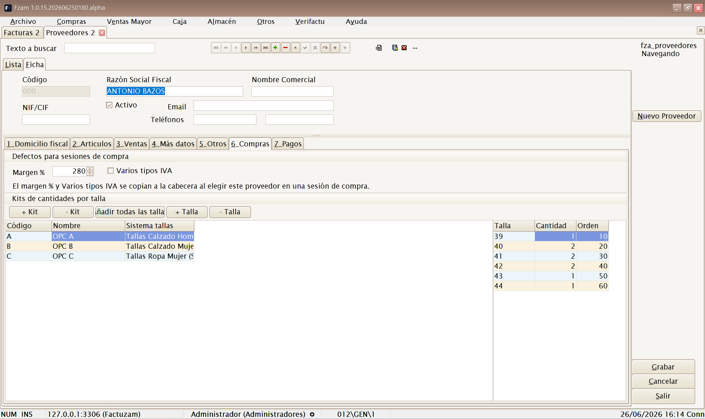
Defectos para sesiones de compra:
| Campo | Para qué sirve |
|---|---|
| Margen % | Margen comercial habitual de este proveedor. Al elegirlo en una sesión de compra, se copia como margen de la sesión y sirve para calcular el precio de venta a partir del precio de compra. |
Estos valores solo se proponen; siempre puedes cambiarlos dentro de la sesión. Solo se copian si el proveedor los tiene rellenos.
Kits de cantidades por talla:
Un kit es una plantilla de reparto de unidades por talla que se repite a menudo con ese proveedor (por ejemplo, un surtido 1-2-2-1 en S-M-L-XL). Aquí se mantiene la biblioteca de kits del proveedor para luego aplicarlos de un clic en las sesiones de compra.
La pestaña tiene dos rejillas: la de kits (cabecera) y la de tallas del kit (detalle).
| Botón | Acción |
|---|---|
| + Kit / − Kit | Crea o borra un kit. Cada kit tiene Código, Nombre, Sistema de tallas y Descripción. |
| Tallas del sistema | Rellena el detalle del kit con una fila por cada talla del sistema de tallas elegido (todas con cantidad 0), listas para teclear las unidades. |
| + Talla / − Talla | Añade o quita filas de talla del kit a mano. |
Cada línea de detalle es una Talla con su Cantidad y un Orden de presentación.
Cómo se usan los kits: dentro de una sesión de compra, sobre la línea de un artículo, el botón Aplicar kit vuelca las cantidades del kit en la matriz de tallas de esa línea. Así, en lugar de teclear talla a talla, aplicas el surtido completo de golpe. Es ideal cuando el proveedor sirve packs con un reparto de tallas estándar.
Pestaña Pagos
Permite indicar los valores que se propondrán al registrar facturas de compra de este proveedor:
| Campo | Para qué sirve |
|---|---|
| Forma de pago | Se copia a la factura de compra y define los vencimientos al generar efectos. |
| Banco para pagos (empresa) | Cuenta propia de la empresa que se preselecciona al generar efectos o incluirlos en remesas. |
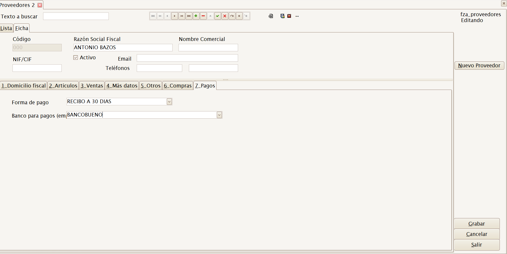
Artículos
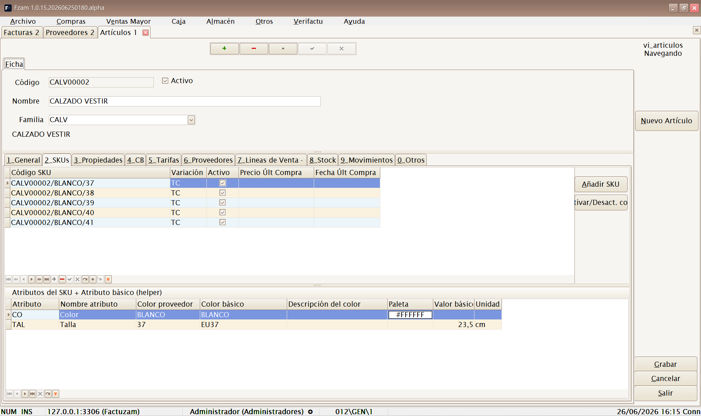
Atajo de menú: [Ctrl]+[A]
Es la pantalla central del catálogo. Mantiene los artículos y sus variantes (las distintas tallas/colores se denominan SKU).
Sub-pestañas de la ficha:
- General — datos básicos: descripción, familia, unidad de medida, IVA, etc.
- SKUs — las variantes del artículo (combinaciones de talla, color u otros atributos). Cada SKU es una referencia vendible con su propio stock y código de barras. Existe un asistente para generar SKUs a partir de las variaciones definidas.
- Propiedades — propiedades descriptivas asignadas al artículo. Algunas propiedades pueden informarse por artículo, por color o por SKU; si un color tiene una temporada distinta, el informe de stock y las búsquedas usan la temporada efectiva de ese color.
- CB — códigos de barras del artículo y sus SKUs.
- Tarifas — precios del artículo en las distintas tarifas.
- Proveedores — proveedores que lo suministran y sus referencias.
Desde la lista/ficha puedes además consultar stock y la foto del artículo con los botones del navegador.
La casilla En web hace que el artículo sea elegible para la integración y encola su comprobación; no equivale por sí sola a publicarlo. Según los checks del perfil efectivo, Factuzam puede sincronizar un producto existente, crear completo e inactivo uno que no exista y, si se ha autorizado expresamente, activarlo solo al final de un proceso correcto.
Al quitar En web, un diálogo permite desactivar el producto remoto, dejar únicamente de sincronizarlo o cancelar el cambio. Ninguna de esas decisiones borra el producto. El comportamiento completo, los permisos y las cautelas de stock se describen en Integración con PrestaShop ▸ Artículos.
Solo los usuarios con el permiso Permisos ▸ Artículos ▸ Activar/desactivar web pueden cambiar esta casilla.
La gestión de fotos trabaja a nivel artículo o SKU/color. Si un SKU no tiene foto propia, hereda la del nivel más cercano disponible. Las fotos se pueden usar también en tickets, listados y balances.
El concepto de SKU (variante de talla/color) es clave en Factuzam: el stock, los precios y los códigos de barras se llevan a nivel de SKU, no solo de artículo.
Tablas Auxiliares
Submenú con los catálogos de apoyo que clasifican y describen a los artículos. Conviene definirlos antes de cargar el catálogo de artículos.
Tarifas
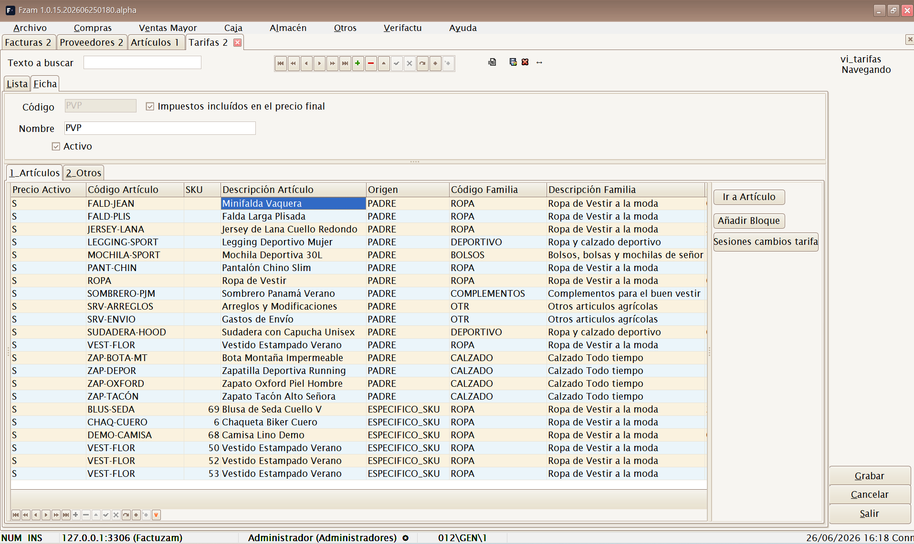
Atajo de menú: [Ctrl]+[T]
Define las listas de precios (tarifa general, ofertas, mayoristas…). Cada tarifa contiene los precios de los artículos.
La tarifa elegida en la configuración de PrestaShop proporciona el precio web. Los precios de SKU se convierten en impactos sobre el precio base; se explica en Precios de producto y de SKU.
- Artículos — precios de cada artículo/SKU en esta tarifa. Incluye utilidades para añadir precios en bloque y calcular márgenes.
- Otros — parámetros de la tarifa (vigencia, redondeos, etc.).
- Dto. desde / Dto. hasta — ventana de fechas en la que se aplican los descuentos de la tarifa. Fuera de esa ventana, se cobra el precio de salida sin descuento aunque la línea de tarifa tenga descuento informado.
El botón Sesiones cambios abre una pantalla para preparar cambios masivos de precios, revisar las líneas calculadas y aplicarlas a la tarifa destino cuando estén validadas.
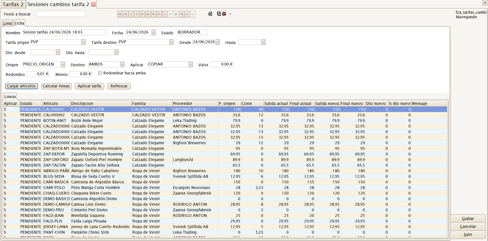
Familias
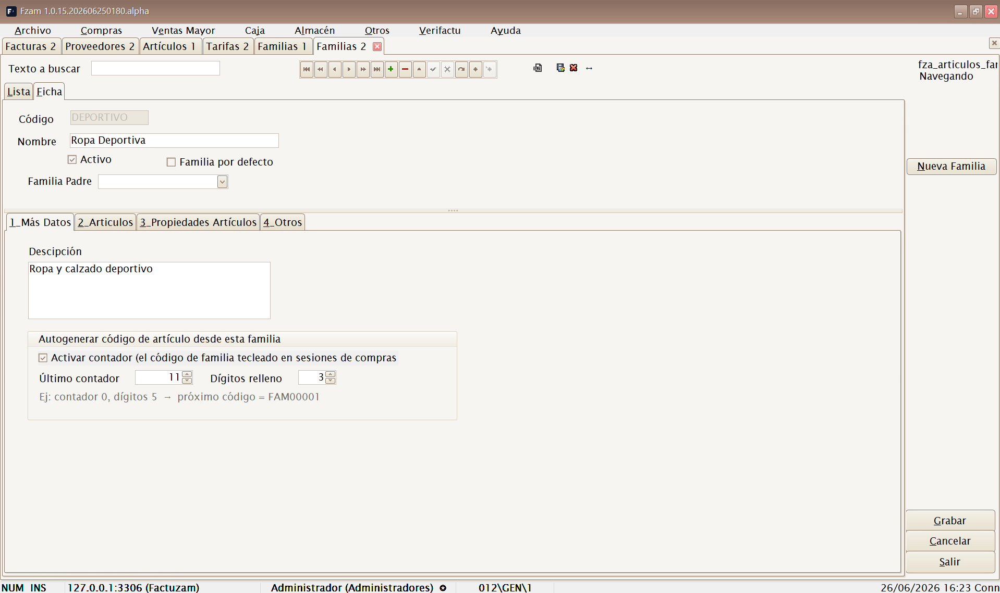
Atajo de menú: [Ctrl]+[N]
Clasificación jerárquica de los artículos (familias y subfamilias). Permite agrupar el catálogo para informes, filtros y precios.
En un alta web autorizada, esta jerarquía se convierte en categorías de PrestaShop bajo la raíz configurada. El perfil decide cuántos niveles locales se conservan y la integración resuelve cada categoría dentro de su padre, no solo por el nombre visible. Consulta Integración con PrestaShop ▸ Familias y categorías.
- Más Datos — datos de la familia.
- Artículos — artículos pertenecientes a la familia.
- Propiedades Artículos — propiedades que heredan los artículos de la familia.
- Otros.
Paises
Atajo de menú: [Ctrl]+[Alt]+[L]
Catálogo de países usado en las direcciones de clientes, proveedores y empresas (y para la clasificación fiscal intracomunitaria/extracomunitaria).
Unidades de Medida
Atajo de menú: [Ctrl]+[Alt]+[U]
Catálogo de unidades en que se compran/venden los artículos (unidad, par, caja, metro, kilo…).
Cada unidad define los decimales que se muestran y se admiten al
vender o mover stock. Por ejemplo, una unidad Uds puede trabajar sin
decimales y una unidad m puede trabajar con dos decimales para telas.
Propiedades
Atajo de menú: [Ctrl]+[Alt]+[Y]
Define propiedades descriptivas de artículos (p. ej. Material, Temporada) y sus valores disponibles.
- Valores Disponibles — lista de valores posibles de la propiedad.
- Artículos — artículos que usan esta propiedad.
Tipos de Variaciones
Atajo de menú: [Ctrl]+[Alt]+[T]
Define los ejes de variación que generan SKUs (p. ej. Talla, Color) y sus atributos.
- Atributos — valores de la variación (S, M, L, XL… o la gama de colores).
- Artículos — artículos que usan este tipo de variación.
- Otros.
Colecciones de Atributos
Atajo de menú: [Ctrl]+[Alt]+[S]
Define conjuntos reutilizables de atributos (p. ej. una colección de tallas estándar) que luego se aplican a varios artículos para generar sus SKUs sin redefinirlos cada vez.
- Valores — atributos que componen la colección.
- Artículos — artículos que la utilizan.
- Otros.
Atributos básicos
Atajo de menú: [Ctrl]+[Alt]+[B]
Catálogo de los atributos elementales (los valores individuales de talla, color, etc.) que componen las variaciones y colecciones.
Además del valor visible, cada atributo puede enlazarse con un atributo básico o equivalente estándar: color normalizado, medida en centímetros, paleta HEX, etc. Factuzam lo resuelve por prioridad: artículo, conjunto y valor global. Esto permite que el mismo texto de proveedor tenga equivalencias distintas según el artículo.
Orden recomendado de configuración del catálogo: Unidades de Medida y Países → Familias → Atributos básicos → Tipos de Variaciones / Colecciones de Atributos → Propiedades → Tarifas → finalmente, los Artículos y sus SKUs.
Invocar login
Atajo de menú: [Shift]+[Ctrl]+[L]
Vuelve a mostrar la ventana de Login sin cerrar la aplicación. Sirve para cambiar de usuario (por ejemplo, que entre otra persona con su perfil) sin reiniciar el programa.
Salir
Atajo de menú: [Alt]+[F4]
Cierra la aplicación. Si hay cambios sin guardar, la aplicación avisará antes de salir.